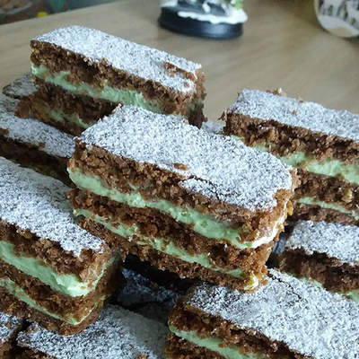

Mandula Szelet |
|
hozzávalók: |
 |
tésztához:a krémhez:ELKÉSZÍTÉS:A pudingport a tejjel sűrűre főzzük, a tűzről levéve folpackkal letakarjuk és kihűlni hagyjuk. A tészta hozzávalóit alaposan összegyúrjuk, 3 egyforma részre osztjuk. Az első rész tésztát sütőpapíron kb. 22×32 cm-es lappá nyújtjuk (a másik kettőt felhasználásig hűtőbe tesszük). Nyújtás közben lisztezzük, hogy ne ragadjon a nyújtófához, de mindig kevés liszttel. A kinyújtott tésztalapot sütőpapírral együtt a tepsi hátoldalára csúsztatjuk és 180 fokos előmelegített sütőben kb. 12-15 perc alatt megsütjük. (Ne süssük túl!) Ugyanígy járunk el a másik két tésztával is. A vajat vagy margarint a porcukorral jól kikavarjuk, majd a kihűlt pudinggal krémesre keverjük. Hozzáadjuk az ízlés szerinti mandula aromát is, majd megtöltjük vele a kihűlt lapokat. Hűtőbe vagy hűvös helyre tesszük. Másnapra megpuhul, ekkor porcukorral megszórjuk és tálaljuk.+1 tipp ez az étel kifejezetten szeretik a Dénesek!! Kulcsár Dénes |
|